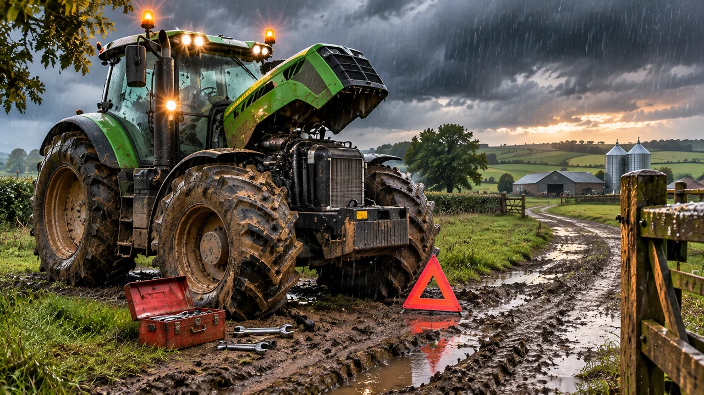
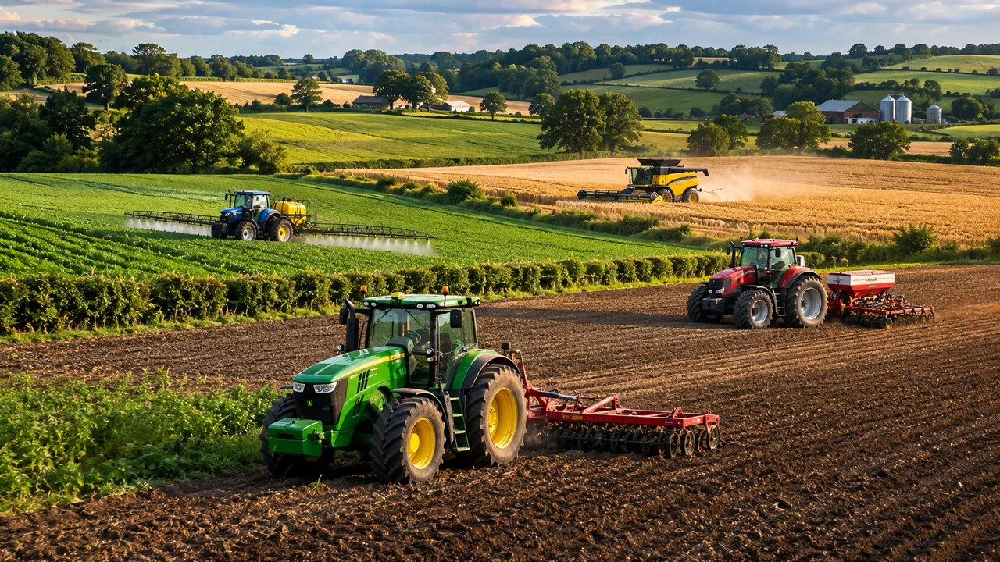
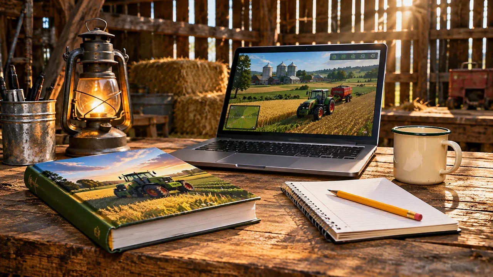
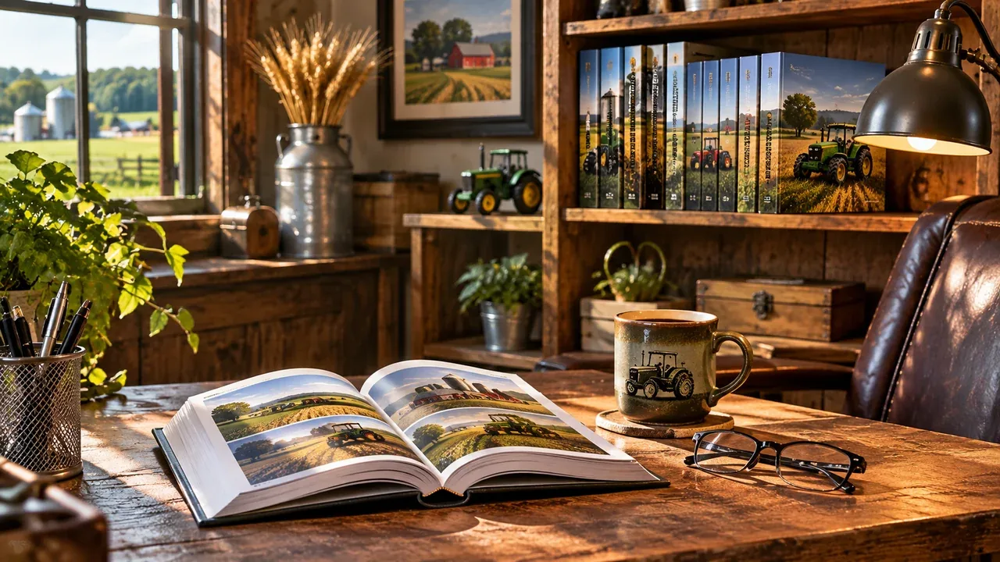

Bring Your Farm to Life
Realistic challenges, rival farmers and new ideas for every Farming Simulator season.

Random Event Generator
Unexpected weather, breakdowns and surprises to change your season.

AI Farming Competitors
Create rival farms, compete for land and bring your map to life.

Gameplay Guides
Realistic rules, challenges and new ways to play.

Book Owners’ Area
Bonus gameplay resources and exclusive extras for book owners.
Install Farming Simulator Guide
This independent fan resource is not affiliated with GIANTS Software. Some tools are under development.